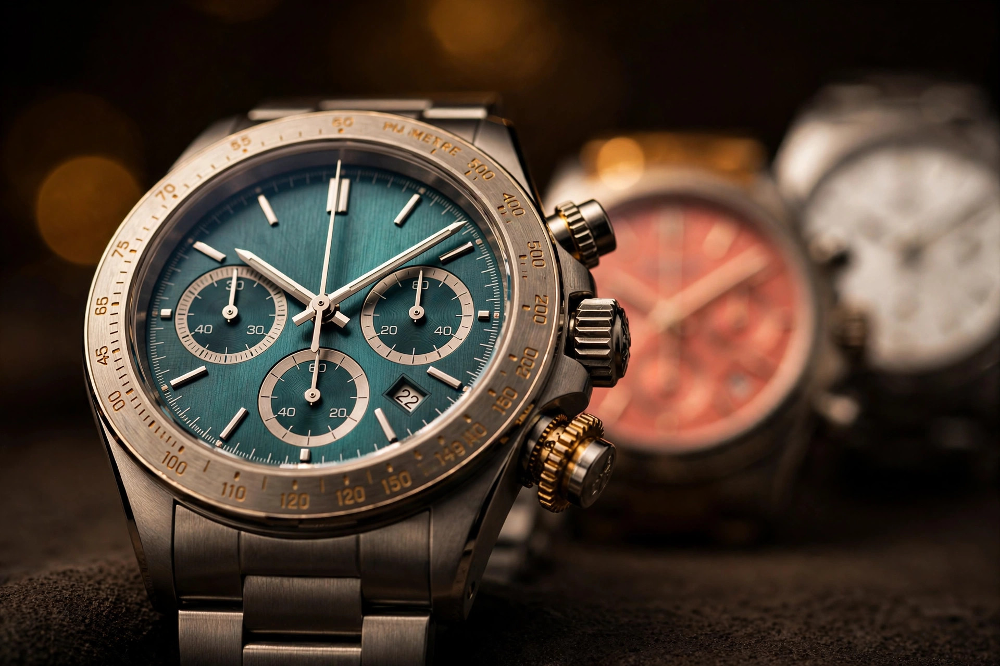

Almost Zero Parallax: Kurono Tokyo's Structure Chronograph S1

Hero image: editorial illustration created for this article, not a photograph of the actual watch.
How should a chronograph be designed as a true, uncompromising tool watch? Hajime Asaoka's answer, announced November 12, is the Structure Chronograph S1, the first release in his new STRUCTURE series.
Forty millimeters of 316L steel, three dials in Teal, Salmon, and White, a four-layer dial built to shrink parallax to almost nothing, and Seiko's NE86PWT automatic chronograph calibre inside. Price is $3,690, the sale opens online November 19 at 11 PM JST, and production is limited. Deliveries start mid-December.
Two words sum up the design ethos, in Asaoka's own phrase: functional elegance. That pairing sounds like marketing until you look at where the effort went. Nothing here is decorative for its own sake. Every decision traces back to legibility under timing load, which is the one job a tool chronograph actually has.
As of November 14, 2026, no independent hands-on coverage of the S1 exists. Monochrome, Hodinkee, Fratello, and Gear Patrol have published nothing on it yet, despite all covering Kurono regularly. What follows rests on Kurono's own product page, Hypebeast's November 12 report, and a first-look from independent watch blog Holden's Watch Desk, with specs corroborated across all three. Feel, wear, and finishing are not, and the article says so where it matters.
Parallax Is a Measurable Problem
Parallax is the error you get when a hand floats above the scale it is supposed to point at, and you view the dial from any angle other than dead-on. On a dress watch it is a rounding error. On a chronograph it is the difference between reading 23 seconds and 24.
Asaoka treats it as an engineering problem with a measurable answer. Kurono describes the S1 dial as a four-layer construction that minimizes the gap between each hand and its index as much as possible to maximize legibility, claims the central chronograph hand sits at almost zero parallax relative to the indices, and says the subdials are enlarged to their utmost limit. Counter hands and the central chronograph hand are finished in fluorescent orange, so the timing information reads as a separate layer from the time of day.
Consider what that stack-up has to survive: at 28,800 beats per hour, the chronograph seconds hand advances eight steps every second, and each step is a visible jump across a scale that has to resolve at a glance. That means the hand, the subdial rings, and the chapter ring need to read as a single plane rather than three stacked plates. A hand floating a millimeter above its scale introduces real reading error when the wrist is turned. Flattening that stack is not styling, it is metrology.
Earlier Kurono chronographs attacked the same legibility problem from a different direction. Chronograph 1 Mk.2 used a gently curved "cylinder dial," centre to edge, so the scale bent toward the hand instead of the hand being pushed toward the scale. S1 keeps the dial flat and solves the gap with layering, so two solutions, one obsession. Asaoka keeps redesigning the same problem because he considers it unsolved.
Dial colours matter here in a way they usually do not, because legibility is the thesis and colour is the test. Teal gives the orange hands maximum contrast, Salmon softens it, and White turns the whole dial into a field the orange can sit on. All three ship on colour-matched rubber straps.
The NE86PWT: What the Money Buys
Inside the S1 sits Seiko's automatic calibre NE86PWT, 34 jewels, 28,800 vph, roughly 45 hours of reserve, with no date and no 12-hour chronograph counter: hours, minutes, seconds, and a 30-minute chronograph, nothing else.
That last detail deserves a pause, because it is a deliberate omission rather than a cost cut. NE86 is the newer version of Seiko's NE88, and the main difference is the missing 12-hour totalizer, which buys a cleaner bi-compax layout: running seconds at nine, chrono minutes at three. Asaoka chose the calibre that times thirty minutes and stops, because a tool chronograph that times thirty minutes well beats one that times twelve hours badly.
What makes the NE86 interesting is its architecture. It is Seiko's column-wheel, vertical-clutch automatic chronograph calibre, the third-party-supplied twin of Seiko's in-house 8R46. Both derive from the 6S family, which also underpins Grand Seiko's 9R86 Spring Drive chronograph.
A column wheel gives precise control of chronograph operation with better pusher feel than cam-and-lever construction. A vertical clutch eliminates the shuddering or jump of the hands when the start button is pushed, because the clutch engages on the same axis it drives rather than sliding sideways into mesh. Seiko has built this combination since its first automatic chronograph in 1969, so the architecture is proven rather than novel.
What is notable is where the architecture sits at this price. In Swiss terms, column-wheel and vertical-clutch chronographs usually cost multiples of $3,690. NE86 delivers the combination because Seiko amortizes the 6S-derived calibre family across Prospex, Grand Seiko Spring Drive, and third-party supply, which spreads the tooling cost across product lines no independent brand could match.
Honest accounting requires the compromise ledger too. Forty-five hours of reserve covers a long weekend, not a week. NE86 is by itself a thick movement at 7.65 millimeters, which is why the S1 case runs 13.15 millimeters even with a box sapphire crystal counted in the measurement, and why no date or hour totalizer fits the brief. Kurono's own Chronograph 1 from 2020 used the same calibre family. Asaoka spent the movement budget on the switching mechanism rather than on complications or reserve, and the watch is better for it.
One naming nuance, for accuracy: the official designation is NE86PWT, where PWT denotes Precision Watch Tokyo, Kurono's manufacturing arm. Earlier Kurono chronographs were listed simply as NE86 or NE86A. Same calibre family, different suffix. And one attribution caution: neither Kurono's S1 page nor Hypebeast names the column wheel or the vertical clutch. Those features belong to the NE86 calibre generally, established by Seiko and by independent calibre references, and this article attributes them that way rather than quoting Kurono as saying them about the S1.
40 by 50.2: The Wearability Equation
Forty millimeters sounds moderate. Fifty-point-two millimeters lug-to-lug is not.
That second number decides how the S1 wears, because lug-to-lug governs whether a case sits on the wrist or overhangs it. Fifty-point-two sits near the limit for sub-seven-inch wrists, especially with 22-millimeter lugs that make the strap visually dominant.
Kurono's own Chronograph 1 lineage ran 38 millimeters, so S1 adds two millimeters of diameter and a much longer lug span while keeping total height effectively flat against the Mk.2, which measured 11.7 millimeters excluding its crystal and 13.5 including it.
Mitigating factors exist, and they are real. Thirteen-point-fifteen millimeters of thickness includes the box sapphire crystal, so the case body itself is thinner than the headline number suggests, and a high-polish case with a rounded box crystal softens the outline in a way a flat slab-sided case cannot. Holden's photo-based first look notes the softer outline explicitly. Still, the 40-millimeter figure alone tells only half the story. Lug-to-lug is the number that matters, and Asaoka printed it honestly.
Why buy the extra span at all? Because the enlarged subdials need the real estate. S1's whole thesis is legibility, and legibility at this scale means subdials enlarged to their utmost limit, which means a dial that cannot shrink below a certain diameter, which means a case that cannot shrink below a certain lug span. Asaoka's own description calls it "a slightly larger 40mm case," and the extra size is doing real work housing the dial, not following fashion. A 38-millimeter S1 would have been a prettier press release and a worse instrument.
Kurono is giving buyers a chance to test that claim in person before the sale. S1 is on display November 12 to 19 at the brand's salons in Aoyama, Tokyo and in Shanghai, where visitors can view and try it on. Japan-domestic buyers also get a separate advance lottery at the Aoyama salon only, with entries closing Monday, November 16 at 7 PM and winners notified Tuesday, November 17. Anyone within reach of either salon should go, because 50.2 millimeters is a number you feel on the wrist in ten seconds and argue about in photographs for a week.
A Tool Watch Rated to 3 Atmospheres
A contradiction sits at the heart of the S1. Asaoka calls this his definitive tool chronograph, yet Kurono rates it to 3 atmospheres. Splash-proof. Not a sports-watch rating. Not a field-watch rating. A rating that says: keep it dry.
That tension is the story, because it forces a definition of "tool" that most watch marketing avoids. Asaoka's tool means legibility under timing load rather than dive or field robustness: enlarged subdials, fluorescent orange hands, near-zero parallax.
Rubber is the only conventionally tool-like element in the whole specification, and even the strap reads as a design choice, colour-matched to each dial, rather than a durability one.
Look at it the other way and the contradiction resolves into a coherent philosophy. A timing instrument for the wrist is not a beater, and pretending otherwise would have meant a screw-down crown, a thicker case, and a different dial, all of which would have cost the legibility the watch exists to deliver. S1 is a chronograph that tells elapsed time accurately at a glance. Nothing more, and nothing less.
Buyers should weigh that trade with open eyes. If your tool watch needs to survive a swim, this is not it, and no amount of rubber strap changes the 3-atmosphere rating. If your tool watch needs to time a lap, a speech, or a parking meter without a second glance, the S1's priorities are exactly right. Asaoka chose a definition and built to it. Most brands choose a word and build to the brochure.
Buying It: The Terms Are the Story Too
Sale mechanics deserve the same scrutiny as the movement, because Kurono's terms are unusually strict and buyers should know them before the window opens. An online order window opens Thursday, November 19, 2026 at 11 PM JST, which is 9 AM Eastern, 6 AM Pacific, and 2 PM in London. Online only, through kuronotokyo.com, worldwide shipping.
Price is $3,690 excluding VAT and duties. US buyers should note the 10 percent baseline tariff, roughly $369, collected by DHL or FedEx on delivery rather than by Kurono, so the landed cost is higher than the headline. Japan domestic price is 632,500 yen tax included. Kurono states a strict no-refund policy, and cancellation incurs a 19.23 percent restocking fee. Warranty and service claims within six months must come from the original buyer, and warranty is voided for watches found on the resale market within six months.
No total production number has been published anywhere, and Holden's Watch Desk flags that explicitly. Kurono says only that production is limited. For context only, Chronograph 1 was a small limited run in 2020 and Chronograph 1 Mk.2 was described as limited production of hundreds, but neither figure tells you anything about the S1 allocation, and this article will not guess.
Deliveries begin mid-December 2026, which puts the watch on wrists roughly a month after the sale. That gap matters for a limited, non-repeating release, because it means the first independent hands-on impressions will land after most buyers have already committed. Salon visitors in Tokyo and Shanghai get the only advance look. Everyone else buys on specifications, photographs, and Asaoka's record.
Limitations, Honestly
I have not handled this watch, and everything here comes from published coverage and Kurono's own specifications, so take the wearability claims as geometry rather than testimony. The high-polish case will show scratches the way polished steel always does.
Several specifics remain unverified. No source mentions luminous material, so do not assume lume, Super-LumiNova, or night legibility: "fluorescent orange" describes hand colour, not glow. No source describes the crown type or pusher style, and photographs appear to show pump pushers, which is visual inference only. No accuracy figure has been published for the S1 specifically; the 8R46 family spec of plus 25 to minus 15 seconds per day is a family figure, not a Kurono claim.
Asaoka's STRUCTURE series opens with a watch that argues, in steel and glass, that a tool chronograph is a legibility instrument first and a rugged object second, and the argument is coherent enough to take seriously even where it is uncomfortable. A 3-atmosphere rating on a self-described tool watch will bother some buyers, and it should. A four-layer dial that puts the timing hand almost on top of its scale will delight others, and it should. Both reactions are correct, because both point at the same decision: Asaoka chose what a tool watch means, then built exactly that and nothing else. For $3,690, with a column-wheel vertical-clutch calibre and a dial engineered like an instrument panel, the S1 is the clearest statement yet of what Kurono Tokyo thinks a watch is for.
Frequently Asked Questions
What is the Kurono Tokyo Structure Chronograph S1? The first release in Hajime Asaoka's new STRUCTURE series, announced November 12, 2026. A 40mm 316L stainless steel chronograph in three dial colours (Teal, Salmon, White), powered by Seiko's automatic NE86PWT calibre, priced at $3,690, sold online only from November 19, 2026, with deliveries from mid-December.
What movement does the Structure Chronograph S1 use? Seiko's automatic calibre NE86PWT, a 34-jewel movement beating at 28,800 vph with a roughly 45-hour power reserve. The NE86 family is a column-wheel, vertical-clutch automatic chronograph calibre, the third-party-supplied twin of Seiko's in-house 8R46, derived from the 6S family. It has no date and no 12-hour chronograph counter.
How do I buy the Kurono Tokyo Structure Chronograph S1? Through an online order window at kuronotokyo.com opening Thursday, November 19, 2026 at 11:00 PM JST (9:00 AM EST). The watch costs $3,690 excluding VAT and duties, is limited production that will not be repeated, and is limited to one per customer. It is also on display November 12 to 19 at Kurono salons in Aoyama, Tokyo and Shanghai.
Sources
- Kurono Tokyo, official product page, "Chronograph S1," live November 12, 2026, confirming the STRUCTURE series first release, Asaoka's "new kind of tool watch" positioning and "Functional Elegance" design ethos, 40mm 316L stainless steel case, 13.15mm thickness including box sapphire crystal, 50.2mm lug-to-lug, 22mm lug width, rubber strap, four-layer dial construction with almost zero parallax for the chronograph hand, enlarged subdials, fluorescent orange counter and chronograph hands, Seiko NE86PWT automatic calibre with 34 jewels, 28,800 vph and approximately 45-hour reserve, no date, three dials (Teal, Salmon, White), 3 atm water resistance, $3,690 excluding VAT and duties, Japan domestic price of 632,500 yen tax included, online-only sale November 19, 2026 at 11:00 PM JST, limited production that will not be repeated, one per customer, strict no-refund policy, 19.23 percent restocking fee on cancellation, 10 percent US baseline tariff collected by courier, deliveries from mid-December 2026, and salon preview November 12 to 19 at Aoyama, Tokyo and Shanghai with a separate advance lottery at Aoyama (entries closing November 16, winners notified November 17), plus the three-month instalment option, Visa/Mastercard/Amex/Apple Pay/Google Pay payment, and warranty voided for watches found on the resale market within six months.
- Hypebeast, November 12, 2026, "Kurono Tokyo's Structure Chronograph S1 Is Hajime Asaoka's Take on the Perfect Tool Watch," confirming the November 12 announcement, the STRUCTURE series debut, the 40mm high-polished 316L case, 13.15mm thickness, 50.2mm lug-to-lug, 22mm lugs, box sapphire crystal, four-layer dial with near-zero parallax, enlarged subdials, fluorescent orange hands, NE86PWT calibre, three dials, $3,690, online-only sale November 19 at 11 PM JST (9 AM EST), mid-December deliveries, and the Aoyama and Shanghai salon previews.
- Holden's Watch Desk (Holden Richardson), November 13, 2026, "Kurono Structure Chronograph S1," independent first-look confirming the $3,690 price, 40mm case, 50.2mm lug-to-lug, rubber strap, NE86PWT calibre, three dials with colour-matched straps, textured dial centre with pale counters, the softer outline of the high-polish case with box crystal, and explicitly flagging that no total production number has been published.
- Caliber Corner, "Seiko Caliber 8R46," confirming the 8R46 as the in-house twin of the NE86 with no major differences between the two calibres, and the 6S family lineage behind both.
- Seiko Watches, Prospex 8R product page, confirming the 8R46 at 34 jewels, 28,800 vph, approximately 45-hour reserve, and plus 25 to minus 15 seconds per day, and Seiko's explanation that the vertical clutch eliminates hand shudder or jumping at start and the column wheel ensures precise control of chronograph operation.
- Gear Patrol, "Yema Speedgraf Automatic Chronograph," confirming the NE86 as the newer version of the NE88, differing mainly in omitting the 12-hour chronograph counter for a cleaner bi-compax layout.
- Grand Seiko, 9R86 Spring Drive chronograph movement page, confirming the column-wheel and vertical-clutch architecture of the 9R86, derived from the same 6S base as the NE86 family.
- Deployant, review of the Kurono Chronograph 2, calling the NE86 a workhorse movement renowned for reliability and excellent accuracy.
- Kurono Tokyo, Chronograph 1 Mk.2 product notes (kuronotokyo.com), stating the calibre is by itself 7.65mm thick, which drove the Mk.2 three-part case redesign, describing the Mk.2 cylinder dial, and giving the Mk.2 dimensions of 11.7mm excluding crystal and 13.5mm including it; and Vivir, on the Kurono Chronograph 1, for the cam-actuated Valjoux 7750 contrast.